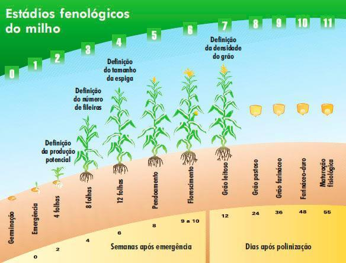
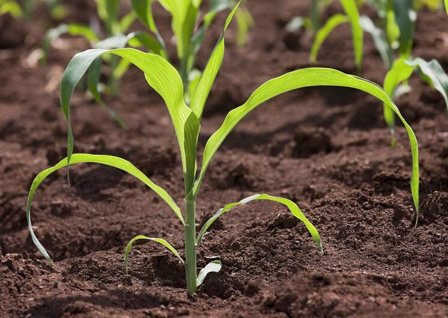

INTRODUÇÃO AO CULTIVO DO MILHO:
O cultivo do milho é uma atividade agrícola de extrema importância no brasil, sendo uma das culturas mais cultivadas no país. A história do milho no Brasil remonta aos povos indígenas, que já cultivavam a planta antes da chegada dos colonizadores. Atualmente, o milho é utilizado tanto na alimentação humana quanto na produção de ração animal, biocombustíveis e diversos outros produtos. sua versatilidade e adaptabilidade a diferentes condições climáticas fazem com que seja uma cultura amplamente cultivada em todo o território nacional
CLIMA E SOLO IDEAIS PARA O CULTIVO:
Durante o período de germinação, as temperaturas ideais do solo para a cultura de milho estariam entre 25ºC e 30ºC, sendo que temperaturas do solo inferiores a 10ºC ou superiores a 40ºC ocasionam prejuízo sensível à germinação
QUAL O SOLO IDEAL PARA O PLANTIO DO MILHO
Textura - Solos de textura média, com teores de argila em torno de 30-35%, ou mesmo argilosos, com boa estrutura, como os latossolos, que possibilitam drenagem adequada, apresentam boa capacidade de retenção de água e de nutrientes disponíveis às plantas, são os mais recomendados para a cultura do milho.
QUAL EO FATOR NATURAL LOCAL QUE MAIS INFLUENCIA NO CULTIVO DO MILHO
A radiação solar é um dos parâmetros de extrema importância para a planta de milho, sem a qual o processo fotossintético é inibido e a planta é impedida de expressar o seu máximo potencial produtivo. Grande parte da matéria seca do milho, cerca de 90%, provém da fixação de CO2 pelo processo fotossintético.
QUAIS SÃO OS BENEFICIOS DO MILHO
Ele tem muita vitamina A, componente que faz bem para a pele e visão, além de favorecer a imunidade e contribuir para a prevenção de doenças. O alimento também oferece boas quantidades de vitaminas B1 e B3, assim como de minerais — como cálcio, ferro, fósforo, magnésio e potássio.
MILHO E BOM PARA SAÚDE
Rico em vitaminas e minerais Ele tem muita vitamina A, componente que faz bem para a pele e visão, além de favorecer a imunidade e contribuir para a prevenção de doenças. O alimento também oferece boas quantidades de vitaminas B1 e B3, assim como de minerais — como cálcio, ferro, fósforo, magnésio e potássio.
BENEFÍCIOS: O milho é uma planta da família Gramineae e da espécie Zea mays. Comummente, o termo se refere à sua semente, um cereal de altas qualidades nutritivas. È um conhecido cereal cultivado em grande parte do mundo. É extensivamente utilizado como alimento humano ou ração animal, devido às suas qualidades nutricionais. O maior produtor mundial são os Estados Unidos. No Brasil, que também é um grande produtor e exportador, São Paulo e Paraná são os estados líderes na sua produção. A maior produção municipal é a de Jataí, em Goiás. O milho é um dos alimentos mais nutritivos que existem. Puro ou como ingrediente de outros produtos, é uma importante fonte energética para o homem. Ao contrário do trigo e o arroz, que são refinados durante seus processos de industrialização, o milho conserva sua casca, que é rica em fibras, fundamental para a eliminação das toxinas do organismo humano. Além das fibras, o grão de milho é constituído de calorias, gordura puras, vitaminas (B e complexo A), sais naturais (metal, isuqieo, fóssio, cálcio), óleo e grandes quantidades de açúcares, gorduras e celulose. Maior que as qualidades nutricionais do milho, só mesmo sua versatilidade para o aproveitamento na alimentação humana. Ele pode ser consumido diretamente ou como componente para a fabricação de balas, biscoitos, pães, chocolates, geléias, sorvetes, maionese e até cerveja.
IMPORTÂNCIA DO MILHO NO BRASIL
No início de seu cultivo, o milho era utilizado basicamente para a subsistência humana. Com o decorrer do tempo foi ganhando importância e transformou-se no principal insumo para a produção de aves e suínos, além de sua importância estratégica para a segurança alimentar do brasileiro ao longo das últimas décadas.
Produção diversificada - Com o crescimento da produção agrícola brasileira, a partir de 1960 até o ano 2000, as regiões Sul, Sudeste e o estado de Goiás respondiam por aproximadamente 70% da oferta nacional do grão. Entretanto, a partir de 2001, a dinâmica da produção do cereal começou a tomar novos rumos, sendo que, na safra atual (2015/2016) o total da produção destes estados deve representar menos de 45% da colheita no país. Os fatores responsáveis por esta mudança na cadeia produtiva do milho são diversos: expansão da agricultura para o cerrado; busca por novas tecnologias pelos produtores; desenvolvimento de sementes mais adaptadas às condições climáticas de cada região; aquisição de equipamentos de melhor rendimento e desempenho; e criação de técnicas redutoras de perdas físicas e de qualidade. A expansão da soja para o Cerrado levou junto a cultura do milho, que, inicialmente, era utilizado somente como prática de rotação de cultura para incrementar a palha ao solo fraco do bioma e também para quebrar o ciclo de pragas e doenças. De acordo com relato de diversos produtores, as áreas que passavam pelo cultivo de milho nos três anos seguintes apresentavam ganho de produtividade de três a cinco sacas de soja, comparativamente às áreas que não realizavam esta prática. Os produtores adotavam o plantio de milho em aproximadamente 20% das áreas, em cada ano, com o objetivo de melhorar a estruturação do solo e aumentar o rendimento das lavouras de soja. Esta técnica começou a ganhar importância em Mato Grosso, Goiás e Mato Grosso do Sul. Entretanto, a partir de 2001, o plantio do milho segunda safra passou a ganhar destaque nas regiões produtoras de grãos do cerrado, assim como no Paraná e em São Paulo. De acordo com os números da Conab, principais estados produtores de milho são Mato Grosso, com previsão de 20 milhões de toneladas para a colheita 2015/2016, seguido do Paraná com 16,2 milhões de toneladas, Mato Grosso do Sul com 8,3 milhões de toneladas, Goiás com 7,7 milhões de toneladas, Minas Gerais com 7 milhões de toneladas e Rio Grande do Sul com 6 milhões de toneladas. Políticas públicas e propostas voltadas para a cultura do milho são discutidas, mensalmente, pela Comissão Nacional de Cereais, Fibras e Oleaginosas, da CNA. Segundo o presidente da Comissão, Almir Dalpasquale, o milho no Brasil se destaca pela qualidade e pelo equilíbrio voltado para o consumo interno e as exportações. No seu entender, o país não pode se preocupar apenas com as vendas externas. É preciso incentivar também o consumo interno. O produtor deve olhar não só para o preço, mas também para as agroindústrias que mantêm o mercado interno e promovem o equilíbrio entre a produção e o consumo do produto. Temos uma demanda forte dentro e fora do país”, destacou.
clique para ter mais explicações